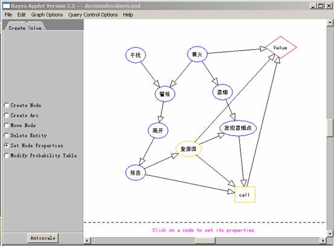

|
实验六 贝叶斯网络实验群
一、实验目的： 熟悉和掌握了解不确定性推理的原理和特点，理解贝叶斯网络的推理原理。 二、实验原理: 贝叶斯网络是一种模拟人类推过程中因果关系的不确定性处理模型，其 网络拓扑结构是一个有向无环图(DAG)，它的节点用随机变量或命题来 标识，认为有直接关系的命题或变量则用弧来连接。通过建立推理规则 知识库,设置前提条件和证据可信度,经过贝叶斯推理,得到结论及其可信度。 三、实验条件： 1 . 贝叶斯网络实验可视化实验环境:下图是该环境运行中的一个画面. 
四、实验内容： 1 观察、验证一个选定的实验模块，分析其原理。 2 自己 建立一个简单的贝叶斯网络，包括建立推理规则知识库和前提条件的可信度。 3 实际运行它，并了解实现贝叶斯推理的主要技术 。 五、实验步骤： 1 建立推理规则知识库。将规则知识逐条加入规则知识库列表框中。 2 当规则知识库建立完成后，点击“建库完毕”按钮，表示用户所建立的规则知识库 的大小已确定下来。规则知识库的最大规模不能超过100条。 3 建立规则知识前提条件的可信度，用户可以从“证据可信度”的下拉列表框中挑选规 则知识前提条件，输入相应的可信度。 4 通过点击“下条证据可信度”按钮，将规则知识逐条加入前提条件可信度列表框。当 规则知识前提条件的可信度建立完成后，点击“证据完毕”按钮。此时用户可以看到 “开始推理”按钮被激活，则表示用户可以进行推理。 5 用户点击“开始推理”按钮后，可以看到生成的贝叶斯网络推理示意图以及在“推 理结果如下”文本框中最后结论的后验概率值。 六、实验结论：包括做实验的目的、方法、过程等，具体要写成实验报告,如下图所示（见下页）。 要求： 1 建立的知识库和规则库内容。 2 贝叶斯推理网络及推理结果。 3 试论述贝叶斯推理网络的推理机制及特点。
附：贝叶斯实验报告表:
|
|||||||||||||||||||||||||||||||||||||||||
| [导航栏特性在此站点中不可用] | |||||||||||||||||||||||||||||||||||||||||